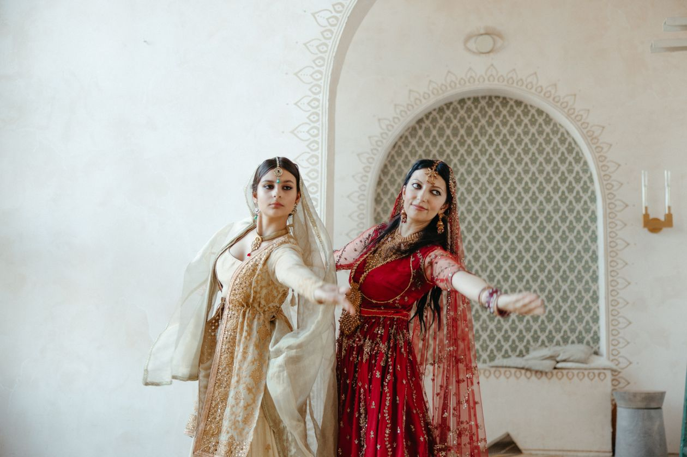

Counted in, from the back row.
Sana Qureshi started where every choreographer in this city starts: in the back row, in 2014, one of forty dancers matching a step she could barely see. The back row teaches you the trade's first truth — a step that only works for the front row is not a step, it's a solo with witnesses.
From 2017 to 2021 she assisted — fourteen film songs taught on other choreographers' floors, setting counts, drilling formations, standing in for the heroine at camera rehearsals at 6 a.m. Those years are credited on this site as what they were: assistant years. The songs were not hers, and this site never lists them as hers; what she took from them was the discipline of the floor.
Lead since 2022: nine film songs, a run of stage shows, and — the work she is now known for — sangeet productions, where the dancers are somebody's grandmother and the rehearsal hall is a living room in Pune with the furniture pushed back. Teaching a non-dancer is not a lesser version of the job. It is the job, with the hiding places removed.
She still teaches a weekend academy batch in Andheri, because a choreographer who stops teaching beginners starts choreographing for other choreographers.

Four passes, in this order.
- The song read. The track is mapped before anyone stands up: phrases, hooks, breaths, the places the singer takes the melody up. The choreography serves the song's shape — never the other way round.
- Hook first. The sixteen counts the audience will hum are built before the verses exist, and tested on the least experienced dancer in the room. If they can't hold it, it isn't a hook yet.
- Formations on the floor. Every change is drawn as a diagram, taped on the floor, and walked before it is danced. Count 1 is home; every dancer can find their way back from a mistake.
- Mirror to camera. Steps taught to a mirror face the wrong way for a lens. The last rehearsals re-teach the number to the camera — for sangeets, to the family's phones, which are the cameras that matter.
The choreographer's name is smaller than the song's. That is correct.
A song belongs to its composer, its lyricist, its singers and its production. A choreographer contributes the steps — and on this site, steps are all that is ever claimed. Where a production is named, the role is named with it: lead, assistant, teacher. The fourteen assistant songs of 2017–2021 taught Sana the trade; they are counted as assistant work everywhere on this site, including the scoreboard, because a record that blurs that line will blur any line.
A sangeet family is not a troupe and is never priced or scheduled like one. The planner's tables print the difference — 35 minutes a phrase against 12 — because pretending a grandmother learns at a professional's pace is how sangeets end in tears in a corridor. The slower number is not an insult; it is the honest cost of the best night of somebody's year.
And when something fails — a number dropped, a singer ill, a hook rebuilt at the last minute — it stays in the record, written up in the work. Choreography is a promise made in counts. The counts either happened or they didn't.
Before the first count-in.
Money & calendar
- Fees follow the table on the home page for the 2026–27 season. A quote is written, itemised by the same lines, and holds for 14 days.
- Deposit 40% holds the calendar; the balance is spread across the rehearsal weeks, with the final 10% on the performance day.
- Cancellation: more than 3 weeks out, the deposit returns in full. Inside 3 weeks it is held against the floor time already taught — sessions already danced are billed, sessions not yet danced are not.
- One date change is free if the new date is inside the same season and the floor is free; the planner is re-run and any difference is quoted before anyone commits.
Rights & replacement
- Music rights sit with the production. The production licenses the songs it uses; Sana supplies no music and clears no tracks. The count-in tool on this site plays no song for the same reason.
- The steps are licensed for the stated uses: the production's own screen or stage run, and its official promotional clips. A new production, a remake or a commercial re-staging is a new licence, quoted like a new booking.
- If Sana is ill or injured, her senior associate steps in at the same fee and teaches from the same floor diagrams — or, if the production prefers, every untaught session is refunded in full. The choice is the client's, stated before signing, because of what happened to the dropped number.
- Families keep their footage. Sangeet rehearsal videos Sana shoots for teaching are the family's; they are never used to promote this studio without written permission.